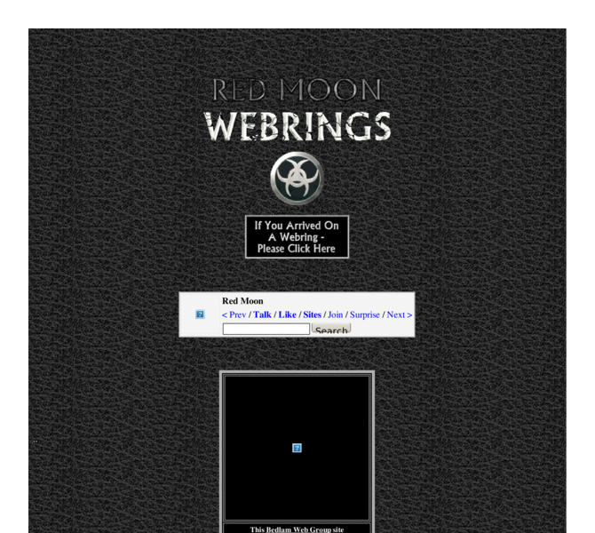

Previewing: Red Moon Previewing: Red Moon 
Use the left/right red arrow controls to navigate through this ring - Click the preview image to visit the member site.

A literary and photographic journey along less trodden paths. Ghosts, monsters, legends and the strangest relics of our ancestors are described, discussed and dissected. Stories - both classics from the past and the best of the current crop - are offered for your entertainment. You will also find poetry, runes, magick and the darkest events in Criminal History.
Red Moon owned by:
 redmoon redmoon
A member of the original webring since 04/09/2006.
|
|